ZX-UX rfortranc — FUSE
Real ZX-UX executable captures from sample programs.
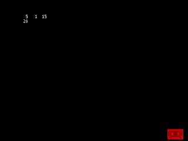
f77s_burkadj · SSX
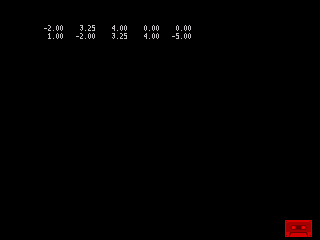
f77s_burkcopy · SSX
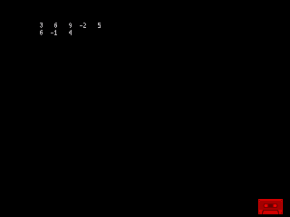
f77s_burkcum · SSX
f77s_burkdot · SSX
f77s_burkflip · SSX
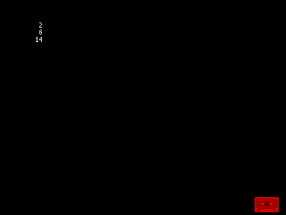
f77s_burkgcd · SSX
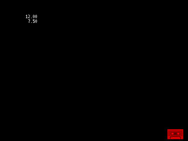
f77s_burkl1 · SSX
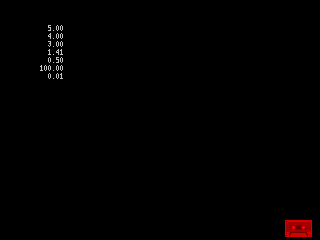
f77s_burkl2 · SSX
f77s_burkmean · SSX
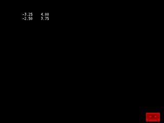
f77s_burkmin · SSX
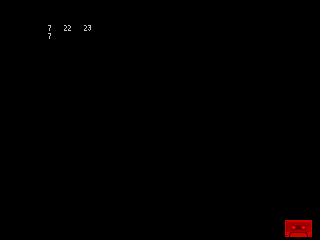
f77s_burkmm · SSX
f77s_burkprime · SSX
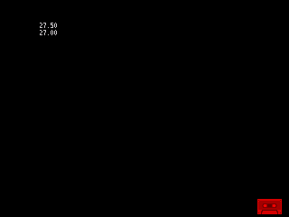
f77s_burkreal · SSX
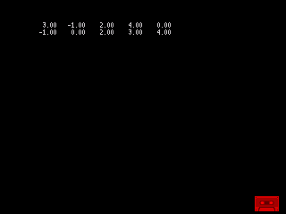
f77s_burkrsrt · SSX
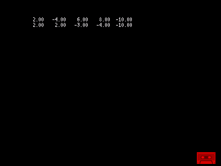
f77s_burkscale · SSX
f77s_burksort · SSX
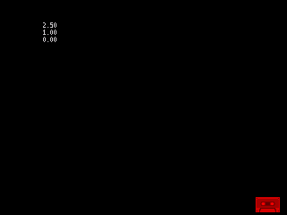
f77s_burkvar · SSX
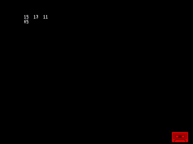
f77s_burkvec · SSX
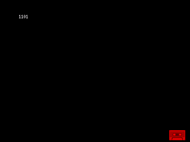
bases · SSX
factorial · SSX
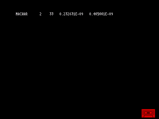
f77s_machar · SSX
prime · SSX
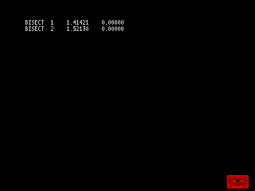
na_bisect · SSX
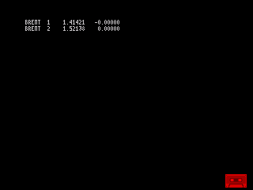
na_brent · SSX
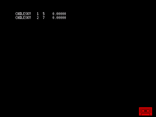
na_cholesky · SSX
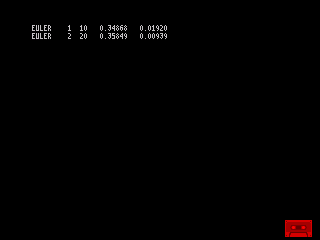
na_euler · SSX
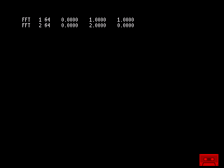
na_fft · SSX
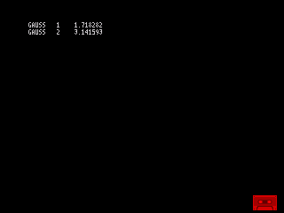
na_gauss · SSX
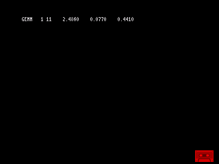
na_gemm · SSX
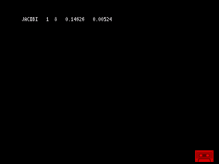
na_jacobi · SSX
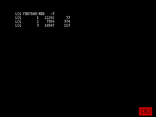
na_lcg · SSX
na_lupivot · SSX
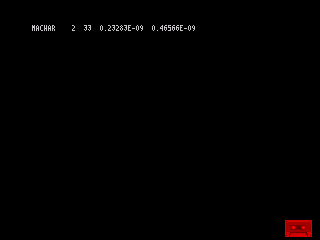
na_machar · SSX
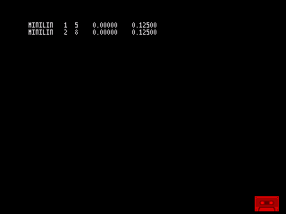
na_minilin · SSX
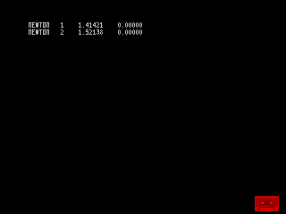
na_newton · SSX
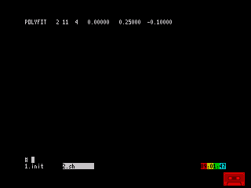
na_polyfit · SSX
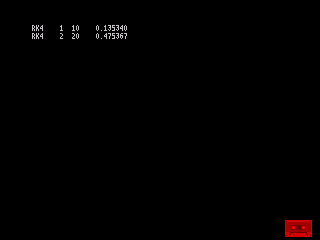
na_rk4 · SSX
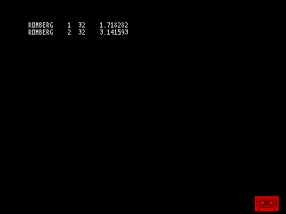
na_romberg · SSX
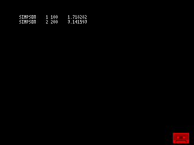
na_simpson · SSX
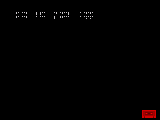
na_square · SSX
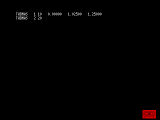
na_thomas · SSX
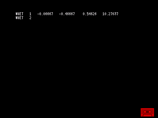
na_whet · SSX